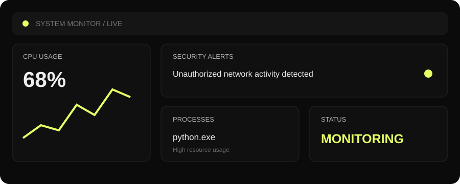
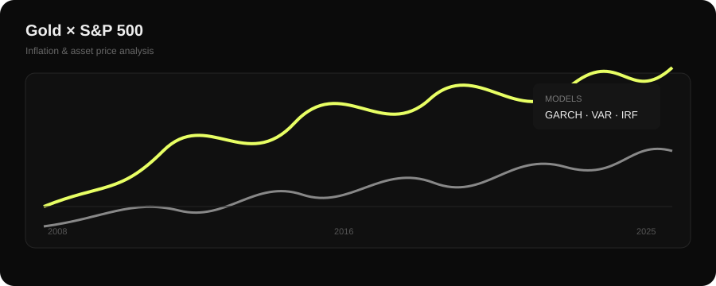
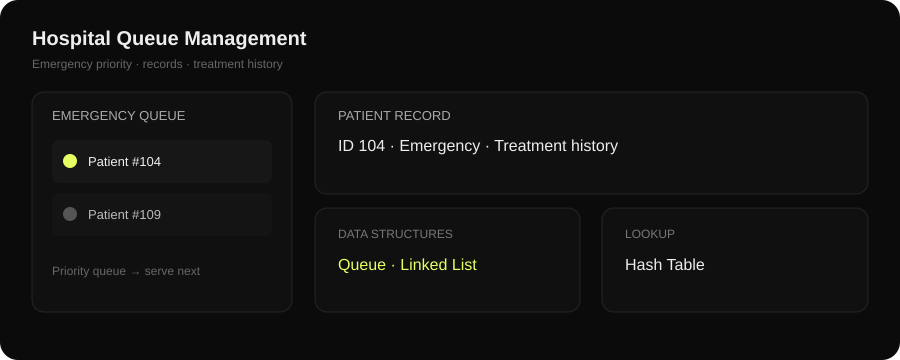
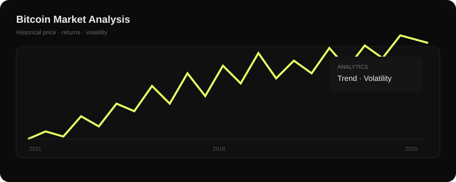

01SECURITY

Real-Time System Monitor
& Security Dashboard
Full-stack OS-level monitoring that detects high-resource processes and unauthorized network activity, with automated alerts and mitigation suggestions.
Computer Science • Data • AI • Security
I'm Nipun Mangla, a B.Tech CSE student who enjoys turning ideas into practical software, analytical tools and intelligent systems.
const nipun = {
focus: [
"DSA",
"AI / ML",
"Cybersecurity",
"Data Analytics"
],
tools: [
"C++", "Python",
"FastAPI", "Power BI"
],
mindset: "keep building"
};I'm pursuing B.Tech in Computer Science & Engineering at Lovely Professional University. I like learning by building — from custom data structures in C++ to real-time security monitoring and financial time-series analysis.
C++ · Python · Java · C · JavaScript
Flask · FastAPI · HTML5 · CSS3 · REST APIs
Pandas · NumPy · GARCH · VAR · ACF · IRF
psutil · anomaly detection · real-time dashboards
Power BI · Streamlit · Matplotlib
Git · GitHub · Problem Solving · Adaptability
Hover over a project to explore the idea behind it.

Full-stack OS-level monitoring that detects high-resource processes and unauthorized network activity, with automated alerts and mitigation suggestions.

Time-series study of inflation, interest rates and asset prices across economic cycles, using GARCH, VAR and impulse response analysis.

Patient-flow system with emergency prioritization, instant record lookup and treatment-history management using custom data structures.

Fourteen years of historical Bitcoin data analyzed for volatility, trends and return patterns to support investment analysis.
Training · Certificate
Infosys Springboard
Neo Colab
Hacker Rank
Hacker Rank
Lovely Professional University